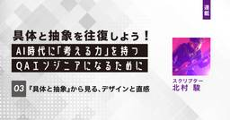

品質 | Sqripts
https://sqripts.com
エンジニアリングを進化させる品質メディア[スクリプツ]
フィード

【第3回】『具体と抽象』から見る、デザインと直感
品質 | Sqripts
はじめに 前回の記事では、分類学という一見するとソフトウェア開発やQAとは遠い学問を手がかりに、「抽象化とは、複数の具体から共通する本質を抜き出し、名前を与えることだ」という話を書きました。 クジラとカバが近縁であること...The post 【第3回】『具体と抽象』から見る、デザインと直感 first appeared on Sqripts.
5日前

「止まらない鉄道」に学ぶ、モダンなシステム開発とSREの品質管理 〜業務システムのクラウド化と、評価部門の新たな役割〜
品質 | Sqripts
はじめに ITコンサルタントのKです。以前、Webサービスの新規開発に関わっておりました。機能開発の段階だったので、機能やビジネスロジックが正しいことの評価が大半で、運用の評価はもっと先という段階でした。 昨今のモダナイ...The post 「止まらない鉄道」に学ぶ、モダンなシステム開発とSREの品質管理 〜業務システムのクラウド化と、評価部門の新たな役割〜 first appeared on Sqripts.
9日前
ローコードアプリ開発における品質保証
品質 | Sqripts
はじめまして、クオリティマネージャーのヒロたです。 近年、多くの企業で DX（デジタルトランスフォーメーション） が求められ、システムは単なる業務効率化ツールではなく、ビジネス戦略の中枢を担う存在になっています。その結果...The post ローコードアプリ開発における品質保証 first appeared on Sqripts.
2ヶ月前
【第2回】分類学とアブストラクト（抽象化）〜「思考の武器」をテスト・QAの現場に活かす〜
品質 | Sqripts
第1回では、AI時代に求められる思考力とは何かを問い直しながら、「抽象化」と「アナロジー」という武器の正体を解き明かしました。 分類学をアナロジーに、クジラとカバが実は親戚であるという驚きとともに、具体から本質を抜き出す...The post 【第2回】分類学とアブストラクト（抽象化）〜「思考の武器」をテスト・QAの現場に活かす〜 first appeared on Sqripts.
2ヶ月前
【第1回】分類学とアブストラクト（抽象化）〜AI時代を生き抜くための「思考の武器」〜
品質 | Sqripts
はじめに 今後のAI時代に必要な「抽象を扱う力」とは 今後のAI時代において、抽象という領域を扱う能力は非常に大事なっていくと言われています。生成AIはコードやテストケースなど、それらを作る具体の作業を代替しつつあるため...The post 【第1回】分類学とアブストラクト（抽象化）〜AI時代を生き抜くための「思考の武器」〜 first appeared on Sqripts.
3ヶ月前
脱・伝言ゲーム！BABOKの知識で顧客の想いをカタチにする方法【飲食店のDX事例】
品質 | Sqripts
こんにちは、QAコンサルタントのヤマダです。 「いい感じのシステム、よろしく！」 エンジニアやプロダクトマネージャーの皆さん、顧客からこんな風に、フワッとした要望を受けて困った経験はありませんか？ 良かれと思って作ったの...The post 脱・伝言ゲーム！BABOKの知識で顧客の想いをカタチにする方法【飲食店のDX事例】 first appeared on Sqripts.
3ヶ月前
【最終回】自分なりのQAエンジニア像を組み立てよう
品質 | Sqripts
様々な専門性を掛け合わせて「自分だけのQAエンジニアの土台を作る」という趣旨で続けてきた本連載も、とうとう最終回を迎えました。今回はまとめとして、「それぞれのQAエンジニア像」を作ることについて総括したいと思います。 私...The post 【最終回】自分なりのQAエンジニア像を組み立てよう first appeared on Sqripts.
4ヶ月前
【最終回】募集側の課題2：QAの中での認知を獲得する
品質 | Sqripts
QAエンジニアの採用・選考 どう採るどう通る？連載の第5回、今回が最終回となります。 第2回・第3回では求職者側の視点、前回(第4回)からは募集側の視点に切り替えて、QAについて何を理解すべきか、理解を深めるための具体的...The post 【最終回】募集側の課題2：QAの中での認知を獲得する first appeared on Sqripts.
5ヶ月前
生成AIはソフトウェアテストを”破壊”するのか？ ー 若手エンジニアが備えるべき「変革」と「新しいスキル」
品質 | Sqripts
こんにちは。QAエンジニアのなおたです。 日々ソフトウェア品質と向き合っている若手エンジニアの皆さん。昨今、「生成AI」という言葉を聞かない日はないでしょう。 先日、生成AI本のベストセラー『生成AIで世界はこう変わる』...The post 生成AIはソフトウェアテストを”破壊”するのか？ ー 若手エンジニアが備えるべき「変革」と「新しいスキル」 first appeared on Sqripts.
5ヶ月前
【第9回】コーチング：相手の中にある答えを引き出し、品質文化を育む
品質 | Sqripts
技術を土台にして自分なりのQAエンジニアを目指す本連載、第9回のテーマは「コーチング」です。 QAやテストの専門性からすると、少し遠い領域だと感じる方も多いかもしれません。正直、私自身、コーチングというものを「なんだか怪...The post 【第9回】コーチング：相手の中にある答えを引き出し、品質文化を育む first appeared on Sqripts.
5ヶ月前